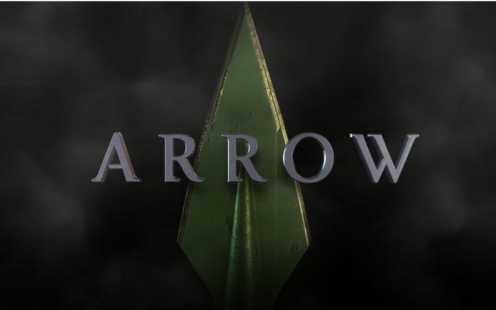
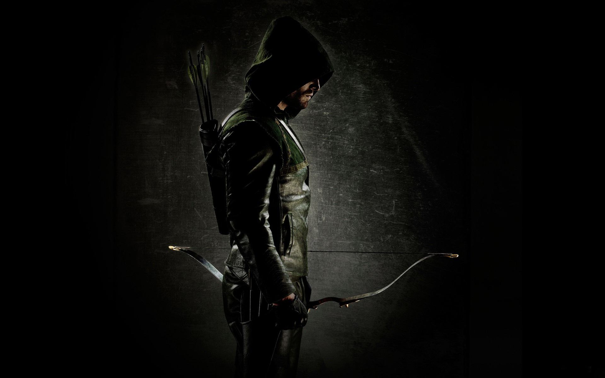
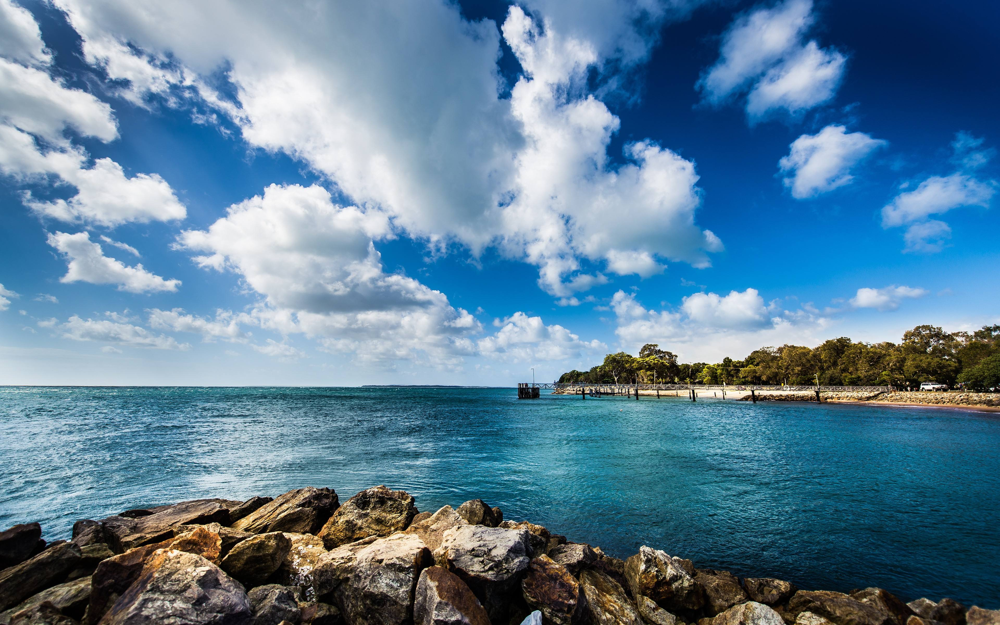

基本资料
- 出生年月： 1986.8.6
- 国籍： 美国
- 出生地： star city
- 别名： 绿箭
- 职业： super hero
联系方式

- 联系电话： 123456789
- 邮箱： arrow@yahoo.com
- QQ: 1346790

个人经历
星城市长
1999-2006
白天
白天的时候是星城的市长，著名企业家奥利弗奎因。接受媒体采访，通过政治和行政手段维护着星城的和平繁荣。
绿箭
1995-2011
夜晚
夜晚化身治安维持者，凭借高超的箭术和格斗技巧，使用暴力手段打击星城犯罪势力

教育经历
小组长
1990-1995
小红花幼儿园
被评为优秀小组长，省级优秀儿童，在校期间获得了剪纸小能手，唱歌小明星等等诸多殊荣
五道杠
1995-1997
希望小学
希望小学优秀毕业生，五道杠大队长，曾当选为省级优秀少先队员，优秀儿童
获奖经历
- 2010 年 优秀学生会干部
- 2011 年 国家科技进步奖
- 2010 年 优秀学生会干部
- 2011 年 国家科技进步奖
- 2010 年 优秀学生会干部
- 2011 年 国家科技进步奖
- 2010 年 优秀学生会干部
- 2011 年 国家科技进步奖